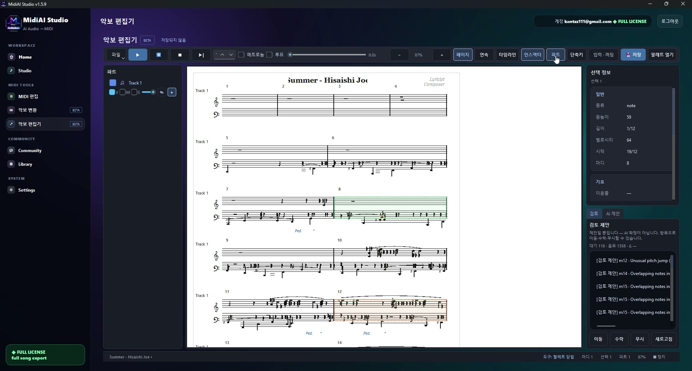

Guide · Sheet music & OMR
Editing Sheet Music Digitally: A Practical Approach
Editing paper is subtractive and nervous — you erase, you smudge, you hope. Editing digital music is additive and fearless, because every change is reversible and nothing you do is permanent until you decide it is. That single difference reshapes how you should approach a score once it is converted.
But digital freedom comes with its own discipline. Without the physical limits of a page, it is easy to make sweeping changes and lose track of what you altered. The craft is learning to edit boldly while keeping your changes legible to your future self.
This guide assumes you have already converted a score — perhaps a paper part run through MidiAI Studio — and focuses on what to do next: the specific, repeatable moves that turn a raw conversion into a polished, correct, and flexible piece of music.

Why digital editing is a different craft than pencil marks
Editing sheet music digitally means manipulating a converted score as data — changing pitches, durations, dynamics, and structure inside an editor rather than annotating a printout. The music becomes a document you revise, not an artifact you deface.
There is a useful distinction hiding here: you can edit the performance (what plays back) or the page (how it looks), and depending on your format those are different jobs. MIDI editing is mostly about the performance; notation editing is about the page. Knowing which you are doing keeps your effort aimed.
Editing the performance versus editing the page
Digital editing works because every musical event is individually addressable. A wrong note is not erased and rewritten; it is selected and re-pitched, its rhythm untouched. That surgical precision is the core advantage, and it means you can fix a pitch without the collateral damage a pencil would cause.
Transposition shows the power most vividly. Moving a whole part up a minor third is one command on data, versus rewriting every note on paper, and because it is reversible you can try a key, sing through it, and change your mind freely. When your source came through MidiAI Studio with parts on separate tracks, you can transpose one voice without dragging the others along.
Dynamics and articulation become editable properties rather than fixed ink. You can shape a crescendo by drawing a velocity ramp, then flatten it and try again, iterating on expression in a way paper simply does not allow. The music stays plastic until you commit.
Fixing wrong notes without disturbing rhythm
Fixing and re-keying a converted vocal part for a mezzo
Suppose you converted a soprano solo in A major from a photocopied part, and your singer is a mezzo who wants it a third lower and with two obviously misread notes corrected. On paper this is a rewrite; digitally it is a short session.
First you correct the two wrong pitches — a misread F-sharp that should be an E, and a note the scan flattened — selecting each and nudging it without touching its duration. Then you transpose the whole line down to F major in a single move and audition it against a piano track.
Because the edits are data, you keep the original A-major version intact on a muted track. If the mezzo later prefers G major, you branch again in seconds. The conversion gave you the raw material; digital editing gave you the flexibility.

Transposing safely for singers and transposing instruments
- Separate what is wrong from what is different. Before editing, decide which notes are recognition errors and which are just choices you want to change. Fix errors first against the source, then make artistic changes, so you never mistake one for the other.
- Correct pitch without touching rhythm. Select a wrong note and change only its pitch. Keeping the duration and position fixed means your correction slots in cleanly without knocking the surrounding beats out of place.
- Transpose at the largest sensible scope. Move a whole part or the whole piece in one operation rather than note by note. Large-scope transposition is instantly reversible and keeps intervals intact.
- Shape dynamics as editable curves. Draw crescendos and accents as velocity data you can redraw. Treating expression as adjustable rather than final lets you iterate until the phrase breathes right.
- Proof against the source and by ear. Play the edited passage against the original and listen for anything that drifted. A final aural pass catches subtle mistakes the eye slides over.
Re-voicing chords and moving inner lines
- Keep the raw conversion on a muted track as your ground truth reference.
- Make one category of change at a time — pitches, then rhythm, then dynamics — so undo is meaningful.
- Name each save with what changed so your history reads like a log, not a mystery.
- Audition transpositions with an accompaniment track to catch range problems early.
- Zoom in for pitch edits and out for structural edits so your view matches your task.
Adding and correcting dynamics as data
- Confusing errors with choices: Editing artistic changes before fixing recognition errors muddles what still needs correcting against the source.
- Changing pitch and rhythm together: Editing both at once makes it hard to tell which change caused a problem when playback sounds off.
- Transposing note by note: Piecemeal transposition breaks intervals and cannot be cleanly reversed if you change keys again.
- Baking in dynamics too early: Committing expression before the notes are final means redoing it after every later edit.
- Skipping the aural proof: Eye-only proofing misses wrong octaves and subtle rhythm slips that are obvious the moment you listen.
Keeping a clean edit history you can undo
The mindset shift that makes digital editing click is treating the score as a draft rather than a document. Paper begs to be treated as final; a converted file invites experimentation, and the musicians who get the most from conversion are the ones who edit like writers revising prose, not like scribes copying it.
A subtle benefit is that digital editing separates concerns that paper fuses. On the page, pitch, rhythm, and dynamics all share the same ink; in an editor they are distinct dimensions you can adjust in isolation. That separability is why a targeted fix stays targeted instead of rippling outward.
Proofing your edits by ear and by eye
It is worth building a personal order of operations. Structural edits before note edits, note edits before expression, expression before layout — working coarse to fine means each stage stands on a stable foundation and your undo history tells a coherent story.
Above all, keep the original close. The single habit that most improves digital editing is never destroying your starting point. With the raw MidiAI Studio conversion muted alongside your work, every change is a reversible experiment rather than an irreversible commitment.
FAQ
Straight answers for musicians researching edit sheet music digitally. Expand any question—answers stay on this page so you do not bounce away mid-read.
How do I fix a single wrong note without disrupting the rest of the bar?
Select only that note and change its pitch, leaving its start time and duration alone. Because each event is independent, the correction slots in without shifting the surrounding rhythm.
Is it safe to transpose a converted part for a different voice type?
Yes, and it is one of the safest digital edits because it is fully reversible. Transpose the whole part at once and keep the original on a muted track so you can compare or revert.
Can I edit dynamics after converting, or are they fixed?
Dynamics become editable data, so you can draw, flatten, and redraw crescendos and accents freely. Shaping expression digitally is iterative rather than permanent.
Should I edit in MIDI or in notation for correcting a converted score?
Edit in MIDI when you care about the performance and playback; edit in notation when you care about the printed page. Match the tool to whether you are shaping sound or appearance.
How do I avoid losing track of my edits on a digital score?
Edit one category at a time, save with descriptive names, and keep the raw conversion muted alongside your work so you can always see how far you have moved from the original.